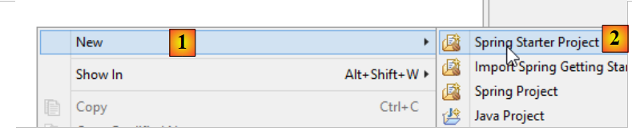
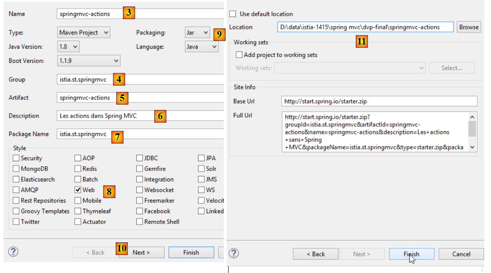
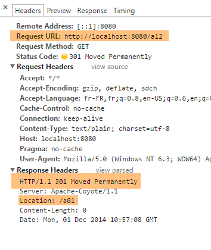

3. الإجراءات: الاستجابة
دعونا ننظر في بنية تطبيق Spring MVC:
 |
في هذا الفصل، ندرس العملية التي توجه الطلب [1] إلى وحدة التحكم والإجراء [2a] الذي سيقوم بمعالجته، وهي آلية تُعرف باسم التوجيه. كما نقدم الاستجابات المختلفة [3] التي يمكن أن يعيدها الإجراء إلى المتصفح. وقد يكون هذا شيئًا آخر غير عرض V [4b].
3.1. المشروع الجديد
نقوم بإنشاء مشروع Spring MVC جديد:
 |
- في [1-2]، نقوم بإنشاء مشروع جديد يستند إلى Spring Boot؛
 |
- في [3]، اسم مشروع Maven؛
- في [4]، مجموعة Maven التي سيتم وضع ناتج تجميع المشروع فيها؛
- في [5]، الاسم الممنوح لمخرجات التجميع؛
- في [6]، وصف للمشروع؛
- في [7]، الحزمة التي سيتم وضع الفئة القابلة للتنفيذ للمشروع فيها؛
- في [8]، طبيعة المشروع. هذا مشروع ويب مع طرق عرض Thymeleaf. هنا، نرى جميع تبعيات Maven الجاهزة للاستخدام التي يوفرها مشروع Spring Boot؛
- في [9]، نحدد أن ناتج بناء Maven سيتم تجميعه في أرشيف JAR بدلاً من WAR. سيستخدم المشروع بعد ذلك خادم Tomcat مدمج، والذي سيتم تضمينه في تبعياته؛
- في [10]، ننتقل إلى الخطوة التالية من المعالج؛
- في [11]، حدد دليل المشروع؛
 |
- في [12]، المشروع الذي تم إنشاؤه؛
- في [14-15]، أعد تسمية الحزمة [istia.st.springmvc]؛
 |
- في [16]، اسم الحزمة الجديد؛
- في [17]، المشروع الجديد؛
نقوم الآن بإنشاء فئة جديدة؛
 |
- في [1-3]، نقوم بإنشاء فئة جديدة؛
 |
- في [5] نسميها، وفي [4] نحدد حزمة البرنامج؛
- في [6] المشروع الجديد؛
الفئة حالياً كما يلي:
package istia.st.springmvc;
public class ActionsController {
}
نقوم بتحديث هذا الكود على النحو التالي:
package istia.st.springmvc;
import org.springframework.web.bind.annotation.RestController;
@RestController
public class ActionsController {
}
- السطر 6: تشير العلامة [@RestController] إلى أمرين:
- أن فئة [ActionsController] المُعلَّمة بهذه الطريقة هي وحدة تحكم Spring MVC، وبالتالي تحتوي على إجراءات تتعامل مع عناوين URL الخاصة بالعميل؛
- أن نتيجة هذه الإجراءات يتم إرسالها إلى العميل؛
أما التعليق التوضيحي الآخر [@Controller] الذي صادفناه فهو مختلف: حيث تُرجع الإجراءات الخاصة بوحدة التحكم المُعلَّمة بهذه الطريقة اسم العرض الذي يجب عرضه. ومن ثم، فإن الجمع بين هذا العرض والنموذج الذي تم إنشاؤه بواسطة الإجراء الخاص بهذا العرض هو ما يوفر الاستجابة المرسلة إلى العميل.
يتطلب التغيير في بنية مشروعنا تغييرًا في تكوين مشروعنا:
 |
تتطور فئة [Application] على النحو التالي:
package istia.st.springmvc.main;
import org.springframework.boot.SpringApplication;
import org.springframework.boot.autoconfigure.EnableAutoConfiguration;
import org.springframework.context.annotation.ComponentScan;
import org.springframework.context.annotation.Configuration;
@Configuration
@ComponentScan({"istia.st.springmvc.controllers"})
@EnableAutoConfiguration
public class Application {
public static void main(String[] args) {
SpringApplication.run(Application.class, args);
}
}
- السطر 9: تأخذ العلامة [ComponentScan] كمُعلِّم مصفوفة من أسماء الحزم التي يجب أن يبحث فيها Spring Boot عن مكونات Spring. هنا، نُدرج الحزمة [istia.st.springmvc.controllers] في هذه المصفوفة حتى يمكن العثور على وحدة التحكم المُعلَّمة بـ [@RestController]؛
سننشئ إجراءات متنوعة في وحدة التحكم لتوضيح ميزاتها الرئيسية. أولاً، سنركز على الأنواع المختلفة من الاستجابات الممكنة لإجراء ما في تطبيق بدون طرق عرض.
3.2. [/a01, /a02] - Hello world
سيكون الإجراء الأول كما يلي:
@RestController
public class ActionsController {
// ----------------------- hello world ------------------------
@RequestMapping(value = "/a01", method = RequestMethod.GET)
public String a01() {
return "Greetings from Spring Boot!";
}
}
- السطر 4: تحدد العلامة [RequestMapping] الطلب الذي تعالجه الإجراء المُعلَّم:
- السمة [value] هي عنوان URL الذي يتم معالجته،
- وتحدد السمة [method] الطريقة المقبولة؛
وبالتالي، تعالج الطريقة [a01] طلب HTTP [GET /a01].
- السطر 5: تُرجع الطريقة [a01] نوع [String]، والذي سيتم إرساله كما هو إلى العميل؛
- السطر 6: السلسلة التي تم إرجاعها؛
دعونا نشغل التطبيق كما فعلنا عدة مرات من قبل، ثم باستخدام [Advanced Rest Client]، نطلب عنوان URL [/a01] باستخدام GET [1-2]:
 |
- في [3]، استجابة الخادم؛
- في [4]، رؤوس HTTP للاستجابة. يمكننا أن نرى أن الترميز المستخدم هو [ISO-8859-1]. قد نفضل ترميز UTF-8. يمكن تكوين هذا؛
- في [5]، نطلب نفس عنوان URL باستخدام متصفح Chrome؛
نضيف الإجراء التالي [/a02] إلى [ActionsController] (قد نخلط أحيانًا بين عنوان URL والطريقة التي تعالجه، والتي يشار إليها باسم الإجراء):
// ----------------------- accented characters - UTF8 ------------------------
@RequestMapping(value = "/a02", method = RequestMethod.GET, produces="text/plain;charset=UTF-8")
public String a02() {
return "caractères accentués : éèàôûî";
}
- السطر 2: تشير السمة [produces="text/plain;charset=UTF-8"] إلى أن الإجراء يرسل دفق نصي يحتوي على أحرف مشفرة بتنسيق [UTF-8]. يسمح هذا التنسيق على وجه التحديد باستخدام الأحرف المُشَدَّدة؛
لتطبيق هذا الإجراء الجديد، يجب إعادة تشغيل التطبيق:
 |
والنتيجة هي كما يلي:
 |
- في [1]، نرى نوع المستند الذي أرسله الخادم؛
- في [2-3]، تظهر الأحرف المُشَدَّدة بوضوح؛
3.3. [/a03]: إرجاع دفق XML
نضيف الإجراء [/a03] التالي:
// ----------------------- text/xml ------------------------
@RequestMapping(value = "/a03", method = RequestMethod.GET, produces = "text/xml;charset=UTF-8")
public String a03() {
String greeting = "<greetings><greeting>Greetings from Spring Boot!</greeting></greetings>";
return greeting;
}
- السطر 2: تشير السمة [produces="text/xml;charset=UTF-8"] إلى أن الإجراء يرسل دفق XML بأحرف مشفرة بتنسيق [UTF-8]؛
يؤدي تنفيذها إلى النتيجة التالية:
 |
- في [1]، تحدد رأس HTTP أن المستند المرسل هو HTML؛
- في [2]، يستخدم متصفح Chrome هذه المعلومات لتنسيق نص XML المستلم؛
تذكر أنه مع Chrome، يمكنك عرض تبادلات HTTP بين العميل والخادم في وحدة تحكم المطور (Ctrl-Shift-I):

من الآن فصاعدًا، لن نقوم بشكل منهجي بالتقاط لقطات شاشة لتبادل HTTP بين العميل والخادم. في بعض الأحيان، سنكتفي باقتباس نص هذه التبادلات.
3.4. [/a04, /a05]: إرجاع موجز JSON
نضيف الإجراء [/a04] التالي:
// ----------------------- produce from jSON ------------------------
@RequestMapping(value = "/a04", method = RequestMethod.GET)
public Map<String, Object> a04() {
Map<String, Object> map = new HashMap<String, Object>();
map.put("1", "un");
map.put("2", new int[] { 4, 5 });
return map;
}
- السطر 3: تُرجع الإجراء نوع [Map]، وهو عبارة عن قاموس. تذكر أنه مع وحدة التحكم [@RestController]، تكون نتيجة الإجراء هي الاستجابة المرسلة إلى العميل. ونظرًا لأن HTTP هو بروتوكول لتبادل أسطر النص، يجب تسلسل استجابة العميل إلى سلسلة. للقيام بذلك، يستخدم Spring MVC محولات متنوعة [Object <---> string]. يتم ربط كائن معين بمحول من خلال التكوين. هنا، ستقوم ميزة التكوين التلقائي في Spring Boot بفحص تبعيات المشروع:
 |
التبعيات الخاصة بـ Jackson المذكورة أعلاه هي مكتبات لتسلسل الكائنات وإلغاء تسلسلها إلى سلاسل JSON. سيستخدم Spring Boot بعد ذلك هذه المكتبات لتسلسل الكائنات التي تعيدها الإجراءات وإلغاء تسلسلها. يمكن العثور على مثال لرمز Java لتسلسل كائنات Java وإلغاء تسلسلها إلى JSON في القسم 9.7.
لاحظ في السطر 2 أننا لم نحدد نوع الاستجابة التي يتم إرسالها. سنرى النوع الافتراضي الذي سيتم إرساله.
النتائج في Chrome هي كما يلي [1-3]:
 |
دعونا الآن نضيف الإجراء التالي [/a05]:
// ----------------------- produce from jSON - 2 ------------------------
@RequestMapping(value = "/a05", method = RequestMethod.GET)
public Personne a05() {
return new Personne(1,"carole",45);
}
فئة [Person] هي كما يلي:
 |
package istia.st.sprinmvc.models;
public class Personne {
// identifier
private Integer id;
// name
private String nom;
// age
private int age;
// manufacturers
public Personne() {
}
public Personne(String nom, int age) {
this.nom = nom;
this.age = age;
}
public Personne(Integer id, String nom, int age) {
this(nom, age);
this.id = id;
}
@Override
public String toString() {
return String.format("[id=%s, nom=%s, age=%d]", id, nom, age);
}
// getters and setters
...
}
يؤدي التنفيذ إلى النتائج التالية:
 |
- في [1]، يشير الخادم إلى أن المستند الذي يرسله هو JSON؛
- في [2]، المستند JSON المستلم؛
3.5. [/a06]: إرجاع دفق فارغ
نضيف الإجراء [/a06] التالي:
// ----------------------- render an empty stream ------------------------
@RequestMapping(value = "/a06")
public void a06() {
}
- في السطر 3، لا تُرجع الإجراء [/a06] أي شيء. سيقوم Spring MVC بعد ذلك بإنشاء استجابة فارغة للعميل؛
يؤدي التنفيذ إلى النتائج التالية:
 |
فيما سبق، تشير سمة [Content-Length] في HTTP في الاستجابة إلى أن الخادم يرسل مستندًا فارغًا.
3.6. [/a07, /a08, /a09]: نوع البيانات مع [Content-Type]
نضيف الإجراء التالي [/a07]:
// ----------------------- text/html ------------------------
@RequestMapping(value = "/a07", method = RequestMethod.GET, produces = "text/html;charset=UTF-8")
public String a07() {
String greeting = "<h1>Greetings from Spring Boot!</h1>";
return greeting;
}
- السطر 2: يعرض الإجراء [/a07] دفق HTML [text/html]؛
- السطر 4: سلسلة HTML؛
ينتج عن التنفيذ النتائج التالية:
 |
- في [1]، نرى أن Chrome قد فسّر علامة HTML <h1>، التي تعرض محتواها بخط كبير؛
الآن لنفعل الشيء نفسه مع الإجراء [/a08] التالي:
// ----------------------- result HTML in text/plain ------------------------
@RequestMapping(value = "/a08", method = RequestMethod.GET, produces = "text/plain;charset=UTF-8")
public String a08() {
String greeting = "<h1>Greetings from Spring Boot!</h1>";
return greeting;
}
- السطر 2: استجابة الإجراء من النوع [text/plain]؛
والنتائج هي كما يلي:
 |
- في [1]، لم يقم Chrome بتفسير علامة HTML <h1> لأن الخادم أبلغه أنه يرسل دفق [text/plain] [2]؛
دعونا نجرب شيئًا مشابهًا مع الإجراء [/a09] التالي:
// ----------------------- result HTML in text/xml ------------------------
@RequestMapping(value = "/a09", method = RequestMethod.GET, produces = "text/xml;charset=UTF-8")
public String a09() {
String greeting = "<h1>Greetings from Spring Boot!</h1>";
return greeting;
}
- السطر 2: نرسل دفق [text/xml]؛
والنتائج هي كما يلي:
 |
- في [1]، لم يقم Chrome بتفسير علامة HTML <h1> لأن الخادم أبلغه أنه يرسل دفق [text/xml] [2]. ثم تعامل مع علامة <h1> كعلامة XML؛
تسلط هذه الأمثلة الضوء على أهمية رأس HTTP [Content-Type] في استجابة الخادم. يستخدم المتصفح هذا الرأس لتحديد كيفية تفسير المستند الذي يتلقاه؛
3.7. [/a10, /a11, /a12]: إعادة توجيه العميل
نقوم بإنشاء وحدة تحكم جديدة [RedirectController]:
 |
سيكون كود [RedirectController] كما يلي في الوقت الحالي:
package istia.st.springmvc.controllers;
import org.springframework.stereotype.Controller;
import org.springframework.web.bind.annotation.RequestMapping;
import org.springframework.web.bind.annotation.RequestMethod;
@Controller
public class RedirectController {
}
- السطر 7: نستخدم التعليق التوضيحي [@Controller]، مما يعني أنه بشكل افتراضي، يشير نوع [String] لنتيجة الإجراء الآن إلى اسم إجراء أو عرض؛
نقوم بإنشاء الإجراء [/a10] التالي:
// ------------ bridge to third-party action -----------------------
@RequestMapping(value = "/a10", method = RequestMethod.GET)
public String a10() {
return "a01";
}
- السطر 4: نُرجع 'a01' كنتيجة، وهو اسم إجراء. سيقوم هذا الإجراء بعد ذلك بإرسال الاستجابة إلى العميل؛
فيما يلي مثال:
 |
- في [2]، تلقينا الدفق من الإجراء [/a01]؛
- في [3]، يعرض المتصفح عنوان URL الخاص بالإجراء [/a10]؛
نقوم الآن بإنشاء الإجراء التالي [/a11]:
// ------------ temporary 302 redirect to a third-party action -----------------------
@RequestMapping(value = "/a11", method = RequestMethod.GET)
public String a11() {
return "redirect:/a01";
}
نحصل على النتائج التالية:
 |
- في سجلات Chrome [1-2]، نرى طلبين، أحدهما إلى [/a11] والآخر إلى [/a01]؛
- في [3]، يستجيب الخادم برمز الحالة [302]، الذي يوجه متصفح العميل لإعادة التوجيه إلى عنوان URL المحدد بواسطة رأس HTTP [Location:] [4]. رمز الحالة [302] هو رمز إعادة توجيه مؤقت؛
ثم يقوم المتصفح بإرسال الطلب الثاني إلى عنوان URL الذي تمت إعادة التوجيه إليه:
 |
- في [5]، الطلب الثاني للعميل؛
- في [6]، يعرض متصفح العميل عنوان URL لطلب إعادة التوجيه؛
قد ترغب في الإشارة إلى إعادة توجيه دائمة، وفي هذه الحالة يجب عليك إرسال رأس HTTP التالي إلى العميل:
مما يعني أن إعادة التوجيه دائمة. وتأخذ بعض محركات البحث هذا الاختلاف بين إعادة التوجيه المؤقتة (302) وإعادة التوجيه الدائمة (301) في الاعتبار.
نكتب الإجراء [/a12] الذي سيقوم بتنفيذ إعادة التوجيه الدائمة هذه:
// ------------ permanent 301 redirect to a third-party action----------------
@RequestMapping(value = "/a12", method = RequestMethod.GET)
public void a12(HttpServletResponse response) {
response.setStatus(301);
response.addHeader("Location", "/a01");
}
- السطر 3: نطلب من Spring MVC إدخال كائن [HttpServletResponse]، الذي يغلف الاستجابة المرسلة إلى العميل؛
- السطر 4: نحدد [status] للاستجابة، رأس HTTP [301]:
- السطر 5: نقوم يدويًا بإنشاء رأس HTTP التالي:
وهو عنوان URL لإعادة التوجيه.
يؤدي التنفيذ إلى النتائج التالية:
 |  |
من هذا المثال، سنتعلم كيفية:
- إنشاء حالة استجابة HTTP؛
- تضمين رأس HTTP في الاستجابة؛
3.8. [/a13]: إنشاء الاستجابة الكاملة
من الممكن التحكم في الاستجابة بشكل كامل، كما هو موضح في الإجراء التالي في فئة [ResponsesController]:
 |
// ----------------------- complete response generation ------------------------
@RequestMapping(value = "/a13")
public void a13(HttpServletResponse response) throws IOException {
response.setStatus(666);
response.addHeader("header1", "qq chose");
response.addHeader("Content-Type", "text/html;charset=UTF-8");
String greeting = "<h1>Greetings from Spring Boot!</h1>";
response.getWriter().write(greeting);
}
- السطر 3: نتيجة الإجراء هي [void]. في هذه الحالة، لإرسال استجابة غير فارغة إلى العميل، يجب استخدام كائن [HttpServletResponse response] المقدم من Spring MVC؛
- السطر 4: نعيّن حالة للاستجابة لن يتعرف عليها العميل؛
- السطر 5: نضيف رأس HTTP لن يتعرف عليه العميل؛
- السطر 6: نضيف رأس HTTP [Content-Type] لتحديد نوع البيانات التي نرسلها، وهو HTML في هذه الحالة؛
- السطران 7-8: المستند الذي يتبع رؤوس HTTP في الاستجابة؛
والنتائج هي كما يلي:
 |
- في [1]، نتعرف على عناصر ردنا؛
- في [2-3]، نرى أن Chrome تجاهل حقيقة أن:
- حالة HTTP للاستجابة لم تكن حالة HTTP معترف بها،
- وأن الرأس [header1] لم يكن رأس HTTP معترفًا به؛
إذا لم يكن العميل متصفحًا بل عميلًا برمجيًا، فيمكنك استخدام أي رموز حالة ورؤوس تريدها.